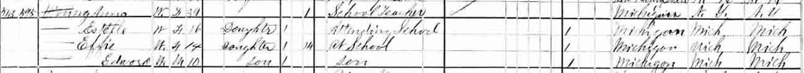
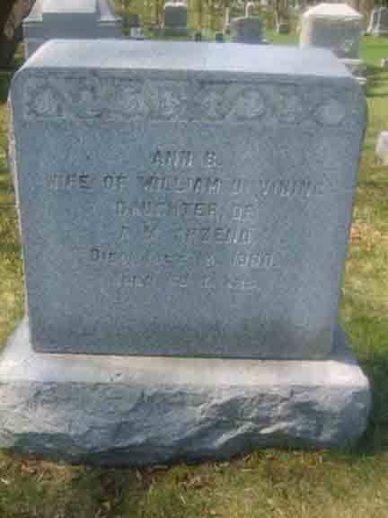

Census Data
| 1870 | 1880 | 1890 | 1900 | 1910 | |
| William Oscar Vining | 34 | dead | |||
| Ann B. (Arzeno) Vining | 29 | 39 | ? | ? | dead |
| [Louise or Estelle ?] Vining | 6 [Louise] | 16 [Estelle] | ? | ? | ? |
| [Mary or Effie ?] Vining | 4 [Mary] | 14 [Effie] | ? | ? | ? |
| Edward Minnick Vining | 1 | 10 | ? | ? | married and living in separate household |


Death Data
Gravestone for Ann (Arzeno) Vining, in Glenwood Cemetery, Wayne, Wayne County, Michigan (from Find A Grave):